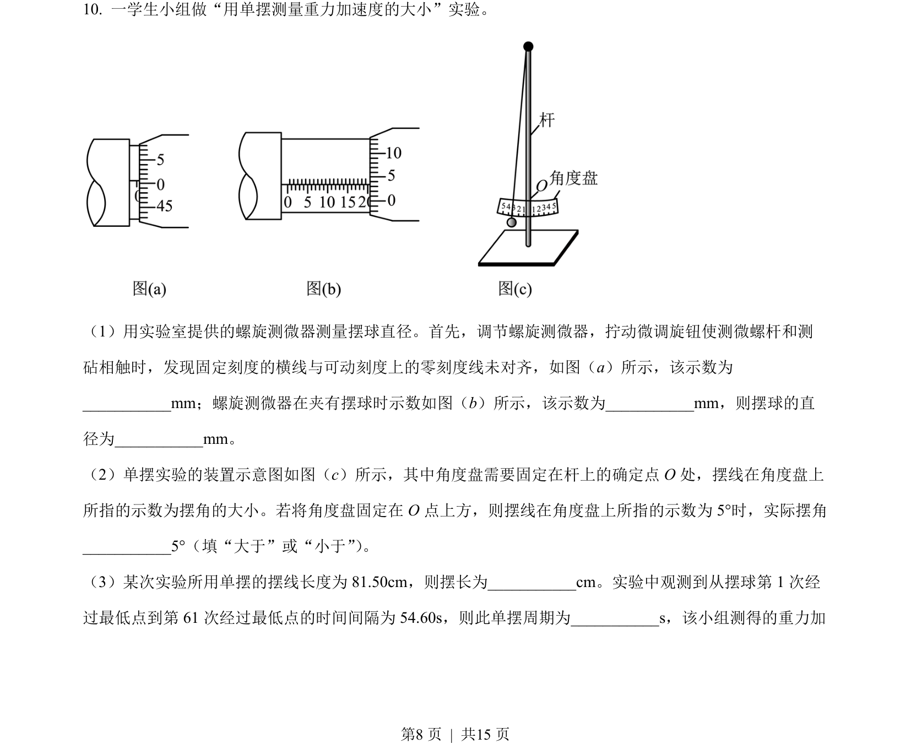
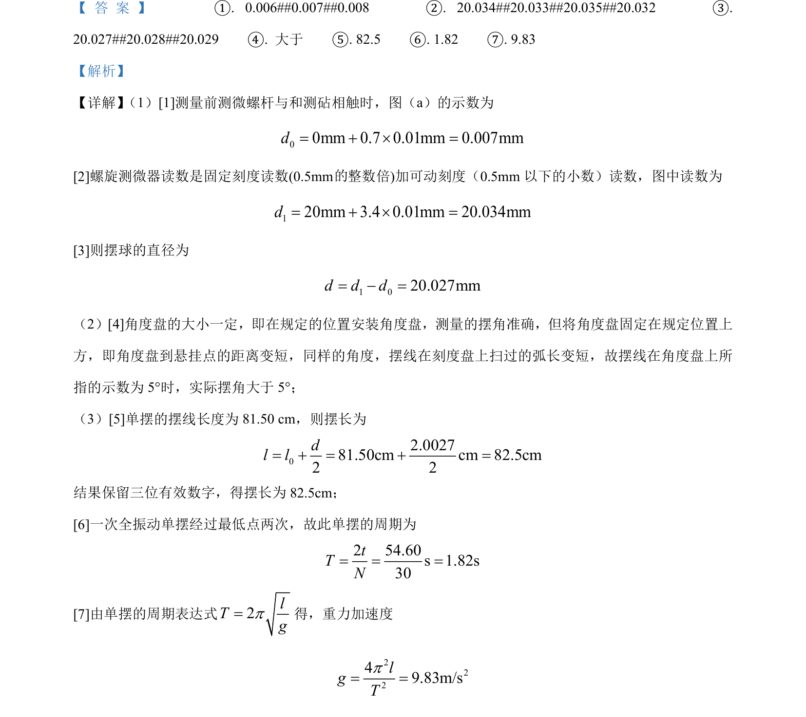

考点：螺旋测微器读数 有效数字 单摆周期公式 误差分析

本题考查螺旋测微器读数、单摆摆长与重力加速度计算及误差分析。

📄 原 PDF 第 8 页：
素材/真题/吉林/2008-2024·（吉林）物理高考真题/2023年高考物理试卷（新课标）（解析卷）.pdf
（1）用实验室提供的螺旋测微器测量摆球直径。首先，调节螺旋测微器，拧动微调旋钮使测微螺杆和测 砧相触时，发现固定刻度的横线与可动刻度上的零刻度线未对齐，如图（a）所示，该示数为 __mm；螺旋测微器在夹有摆球时示数如图（b）所示，该示数为__mm，则摆球的直 径为__mm。 （2）单摆实验的装置示意图如图（c）所示，其中角度盘需要固定在杆上的确定点 O 处，摆线在角度盘上 所指的示数为摆角的大小。若将角度盘固定在 O 点上方，则摆线在角度盘上所指的示数为 5°时，实际摆角 __5°（填“大于”或“小于”） 。 （3）某次实验所用单摆的摆线长度为 81.50cm，则摆长为__cm。实验中观测到从摆球第 1 次经 过最低点到第 61 次经过最低点的时间间隔为 54.60s，则此单摆周期为__s，该小组测得的重力加 的